第四章:配置工作区
在这一章中，你将在 Azure Machine Learning(Azure 机器学习)Studio web 界面中工作，并学习如何配置在其工作空间中运行实验所需的基础设施。然后，您将了解如何调配或附加到现有的计算资源，并在 Azure ML 工作区和托管您的数据的各种数据存储之间建立连接。配置好这些资源后，您将能够注册一个数据集，并探索 Azure ML 中提供的监控这些数据集的功能。
在本章中，我们将讨论以下主要话题:
- 调配计算资源
- 连接到数据存储
- 使用数据集
技术要求
您需要访问 Azure 订阅。在该订阅中，您将需要一个packt-azureml-rg。你将需要一个Contributor或者OwnerT3，如 第二章 、部署 Azure 机器学习工作区资源中所述。
调配计算资源
计算资源允许您在数据探索性分析、培训阶段以及操作 ML 模型时执行代码脚本。 Azure ML 工作区提供了以下类型的计算资源:
- 计算实例:这些是专门为在 Azure ML 工作区工作的每个数据科学家准备的虚拟机。
- 计算集群:这些是可扩展的计算机集群，可以并行运行多个训练或推理步骤。
- 推理集群:这些是 Azure Kubernetes 服务 ( AKS )集群，它们可以操作 Docker 镜像，通过 REST API 公开你的模型。
- 附加计算:这些是现有的计算资源，比如 Ubuntu 虚拟机 ( VMs )或者 Synapse Spark pools ，它们可以附加到工作区来执行你的训练或者推理管道的一些步骤。
当您访问 Azure ML Studio 的管理 | 计算部分时，您将看到并能够通过选择相应的选项卡来管理这些类型，如以下截图所示:
图 4.1–Azure ML Studio 中的计算类型
在接下来的章节中，您将了解每一种计算类型，并理解您必须了解的重要配置参数。
重要说明
供应和附加计算资源也可以通过 Azure ML CLI 和 Azure ML Python SDK 来完成。在第七章 、Azure ML Python SDK中，你会看到通过 Python SDK 提供相同资源的例子。
计算实例
一个计算实例是一个虚拟机，它将方便您作为数据科学家的日常工作。这是一个托管的、基于 Ubuntu 的工作站，预配置了数据科学工具，如 Jupyter Labs、RStudio，以及各种深度学习框架，如 PyTorch 和 TensorFlow 。托管意味着您不必手动更新操作系统或确保它针对最新的安全漏洞打了补丁。
重要说明
计算实例非常适合可能无法在公司计算机上安装 Python 的公司用户。计算实例只要求您拥有现代化的网络浏览器和互联网接入。一旦连接到计算实例，您就可以访问使用 Azure ML 工作空间所需的所有软件包。
您所有的文件和首选项都安全地存储在虚拟机的/home/<username>/cloudfiles/code/文件夹中。此文件夹不是虚拟机磁盘的一部分，但它是从位于您的 Azure ML 存储帐户中的远程文件共享装载的，如下图所示。这种文件共享允许您在多个计算机实例之间共享代码文件和笔记本，您甚至可以在自己计算机上本地安装该文件夹:
图 4.2–装载在多个计算实例上的远程文件共享
计算实例主要支持 studio web 界面的笔记本体验，但是它们也可以用于小规模的训练和推理。事实上，计算实例提供了作业排队功能，并允许您在每个内核上运行两个作业，这对于测试和调试场景非常有用。在本章后面的数据漂移检测部分，您将使用您的计算实例来执行数据漂移分析。在下一节中，您将学习如何调配您的第一个计算实例。
调配计算实例
- In the studio web interface, navigate to the Manage | Compute section and select the Compute instances tab. If no compute instances have been provisioned, you will see a short introduction to compute instances: you can click the New button to start the compute provisioning wizard, as shown on the left-hand side of Figure 4.3. If other compute instances have already been provisioned in the workspace, you can start the same wizard by clicking on the New button from the top menu, as shown on the right-hand side of the following screenshot: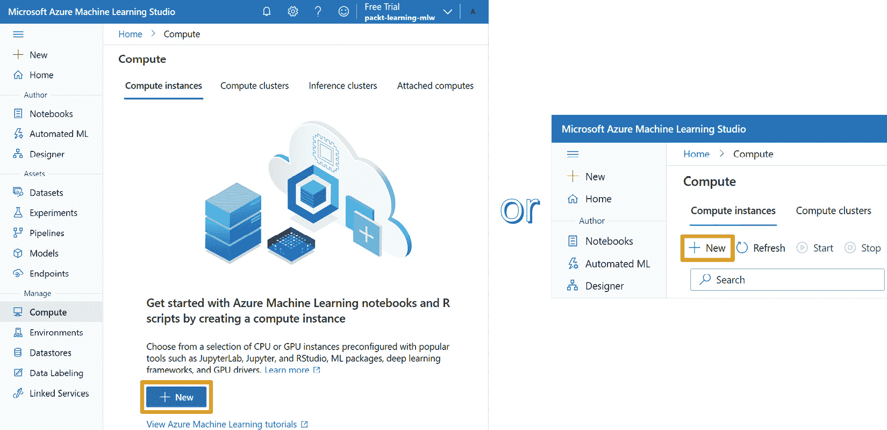
图 4.3–启动计算实例配置向导
- The first thing you will need to select is the virtual machine's size. You can specify whether you need GPU-enabled machines or normal CPU machines. If you plan to run computer vision experiments or deep neural network training, a GPU machine can accelerate the training and inference process if the framework supports GPUs. Moreover, you can add filters to limit the list based on the minimum requirements you have for your workspace. In our case, we will select a CPU-only compute instance that has at least 14 GB of RAM and at least 4 cores, as shown in the following screenshot: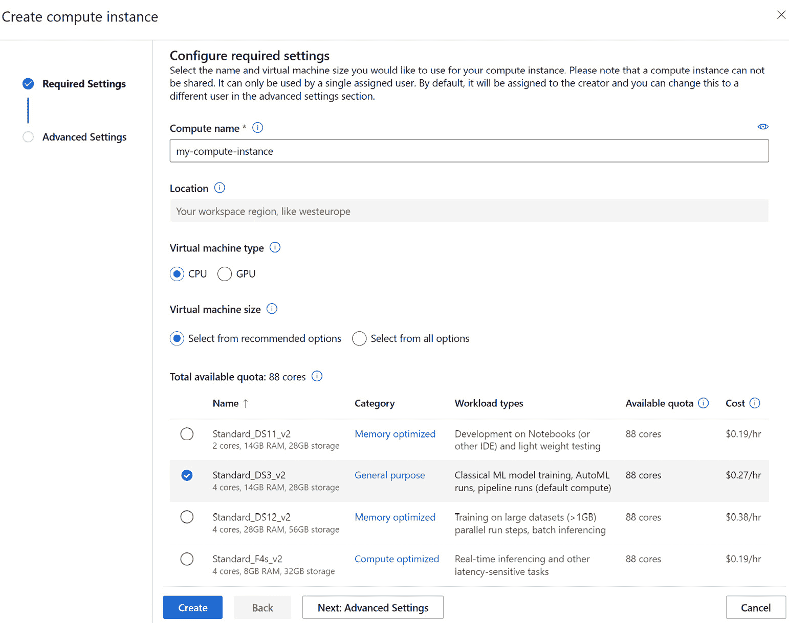
图 4.4–计算实例配置向导的第一页
在结果表中，您可以查看每个虚拟机的特征，并估计每小时的成本。
重要说明
虚拟机的成本取决于它们的大小，但也取决于它们被调配的区域。例如，在撰写本书时，美国东部 2 小时的平均价格最低，而西欧是最贵的地区之一。
下面的表包含了关于出现在结果列表中的前三个虚拟机大小的更多信息。标准 _D3_v2 和标准 _DS3_v2 虚拟机的主要区别在于高级存储磁盘。这提供了磁盘缓存功能，使虚拟机能够实现超过底层磁盘性能的性能水平。因此，默认情况下，向导建议您选择标准 _DS3_v2 虚拟机大小:
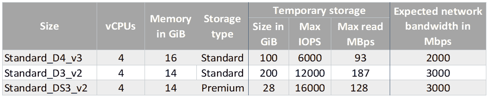图 4.5–基于 docs.microsoft.com 站点的计算规模对比
- Leave the Standard_DS3_v2 size selected and click Next to configure the advanced settings for the compute instance: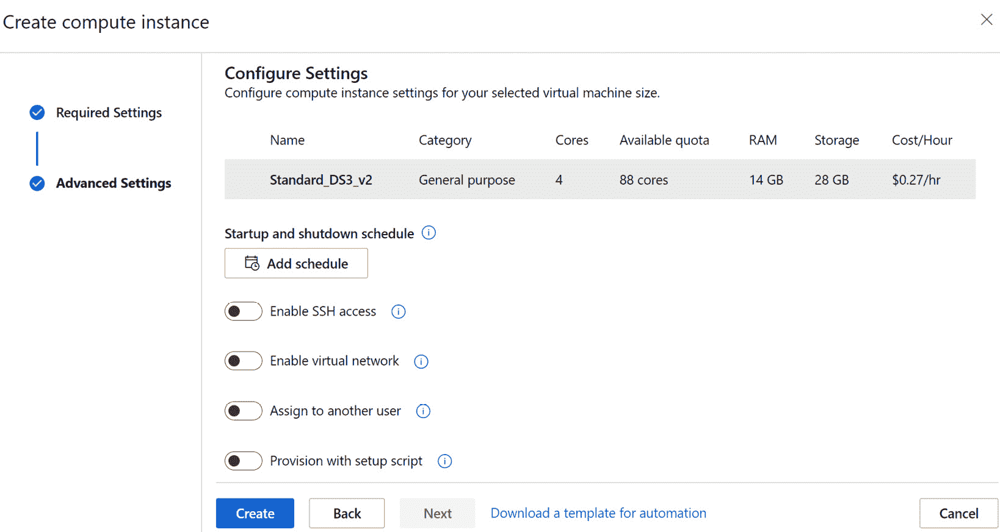
图 4.6–计算实例配置向导的第二页
重要说明
如果你是免费试用，那么你有一个固定的核心配额，你不能改变，除非你切换到现收现付的订阅。您可能需要选择 Standard_DS2_v2 来减少您的计算实例将使用的内核数量。对于您将在 第 7 章 、Azure ML Python SDK中配置的计算机集群，您至少还需要两个内核。
- 现在，您需要提供一个计算机名。这是您将用来引用特定计算机的名称。计算名称在 Azure 区域中应该是唯一的。这意味着您可能需要将名称更改为独一无二的，可能是通过在名称中添加一些数字；比如
ds-021-workstation。 - Optionally, enable the SSH access flag. This option allows you to specify the public portion of the SSH key, which will give you remote access to the compute instance. The wizard allows you to generate that key directly within the wizard. Alternatively, you can generate one by following the instructions provided in the Generating an SSH key pair section. This option is not needed if you only plan to use the studio experience to conduct your data science experiments: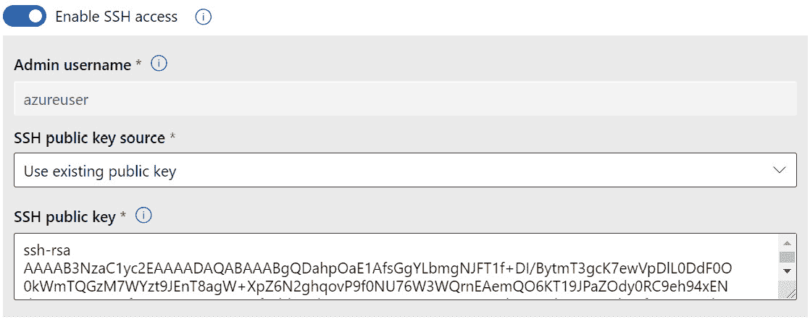
图 4.7–启用对计算实例的 SSH 访问
- 单击创建按钮来配置计算实例。这将完成向导。此时，compute 实例将被创建然后启动: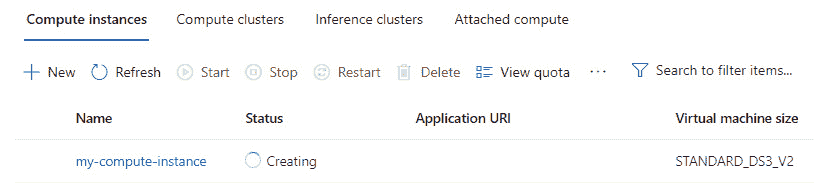
图 4.8–等待计算实例创建并转换到运行状态
在接下来的部分中，将向您简要介绍基于 SSH 密钥的认证，以及如果您不熟悉该过程，如何生成 SSH 密钥。此外，您将探索向导的高级选项，这些选项对于本书来说是不需要的。
生成 SSH 密钥对
SSH 密钥对由两个文件组成——一个私钥和一个公钥。这个密钥对允许最终用户使用密钥的公共部分来加密文本。加密的文本只能由 SSH 密钥的私有部分解密，如下图所示。SSH 密钥的私有部分需要存储在安全的地方，而密钥的公共部分可以自由地分发给任何人:
图 4.9-私钥可以解密用公钥加密的信息
使用 SSH 密钥对的这个属性,您可以向服务器配置您的公钥，以便服务器可以使用它进行身份验证。简而言之，当您尝试连接到服务器时，服务器将创建一个随机挑战，并使用您的密钥的公共部分(在配置计算实例时配置的部分)对其进行加密。您必须使用密钥的私有部分来解密这个挑战，然后用一个答案来验证您已经成功地解密了服务器的消息。这个流将允许您通过 SSH 访问远程服务器。
有多种开源工具可以帮助您在本地机器上生成 SSH 密钥对。Azure 提供了一种非常简单的方法来在浏览器上生成 SSH 密钥对，然后将密钥的公共部分作为资源存储在 Azure 门户中。让我们来看看:
- Navigate to https://portal.azure.com and click on the
SSH Keyresource and click on Create: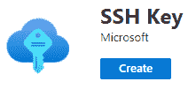图 4.10-市场中的 SSH 关键资源
- Select the
packt-azureml-rgresource group and provide a key-pair name, such asazureml-compute. Click on Review + create to navigate to the last step of the wizard: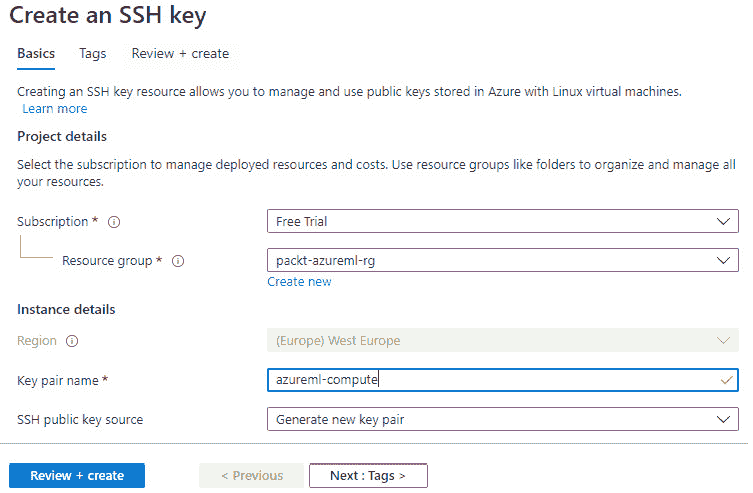图 4.11–生成 SSH 密钥对
- 选择
azureml-compute.pem。确保将文件存储在安全的位置:
图 4.12–存储 SSH 密钥的私有部分
一旦这个过程完成，SSH 密钥资源将出现在您在向导中选择的资源组中:
图 4.13–您部署的 SSH 密钥资源
在参考资料中，您可以找到 SSH 密钥公共部分，您可以将它复制并粘贴到您在配置计算实例小节中看到的计算实例配置向导步骤中:
图 4.14–生成的密钥对的公共部分。在顶部，你可以看到下载的私人部分
重要说明
SSH 密钥资源要求Microsoft.Compute提供者在您计划使用的 Azure 订阅中注册。如果您是订阅的所有者，Azure 将在您部署资源时自动为您注册提供者；否则，您将需要请求订阅所有者为您注册该提供者，同时遵循第 第 2 章 、部署 Azure 机器学习工作区资源中提供的说明。
到目前为止，您已经学习了如何提供计算实例和配置 SSH 密钥，这将允许您远程连接到该计算机。您还可以使用这个 SSH 密钥连接到远程集群，这将在下一节计算集群中提供。在接下来的小节中，您将了解计算实例供应向导的高级配置选项。
高级计算实例设置
在计算资源调配向导中，您可以选择配置一些高级设置。其中之一是启用虚拟网络选项，该选项允许您将调配的计算连接到虚拟网络中的特定子网，如以下屏幕截图所示:
图 4.15–将计算实例连接到特定子网
此功能可解锁多种高级网络拓扑。最常见的是当您计划访问无法通过 internet 访问的数据源时。例如，如果您有一个受防火墙保护以拒绝通过互联网访问的存储帐户，您通常会在特定的子网中部署一个私有端点(T2)，以允许访问该特定的存储帐户(T3)。当您调配计算实例并使用前面的选项将其配置在同一子网上时，该计算实例将能够访问受保护的存储帐户，如下图所示:
图 4.16–访问只能通过私有端点访问的存储帐户
向导中显示的另一个高级选项是分配给另一个用户。这个选项可以追溯到 第 2 章 、部署 Azure 机器学习工作区资源的创建定制角色部分，在那里您学习了如何为您的 Azure ML 工作区创建定制角色。在企业环境中，通常不允许终端用户部署他们想要的任何计算实例。这是通过创建自定义角色并仅允许虚拟机执行以下操作来实现的:
- 微软。计算/虚拟机器/启动/动作
- 微软。计算/虚拟机器/重启/操作
- 微软。计算/虚拟机器/解除分配/操作
在这些环境中，管理员(或拥有微软。compute/virtual machines/write权限)可以调配计算实例，并将它们分配给可能无法自行调配计算实例的特定人员，如以下屏幕截图所示:
图 4.17–将调配的计算实例分配给数据科学家同事
虽然这是 web 界面向导提供的一个很好的特性，但是当您需要为多个数据科学家提供多个计算实例时，它的伸缩性并不好。因此，大多数时候，管理员更喜欢通过 ARM 模板部署来部署计算实例。他们可以通过该向导生成并下载模板，然后使用 Azure CLI 为多个用户部署模板，并将用户 ID 作为参数传递，正如您在 第 2 章 、部署 Azure 机器学习工作区资源中看到的。
到目前为止，您已经看到了如何配置计算实例。在下一节中，您将学习如何管理计算实例。
管理您的计算实例
一旦您提供了至少一个计算实例，管理 | 计算 | 计算实例界面会变成一个列表，显示工作区中可用的实例。默认情况下，该列表经过过滤，仅显示您可以使用的实例，即您自己或他人代表您调配的实例:
图 4.18–计算实例列表
从这里，您可以启动、停止、重启和删除计算实例。当您启动一个计算实例时，资源的状态更改为正在运行并且应用列提供链接来打开计算实例上的终端或打开 Jupyter、JupyterLab、RStudio 和 VS 代码第三方创作体验。
在您打开这三种编辑体验中的任何一种之前，您必须接受一项重要通知，即您可以在这些环境中执行的代码，如下面的屏幕截图所示:

图 4.19–关于您在 Azure ML Studio 中执行的代码的警告消息
重要的是你要明白，如果你从互联网上下载一个随机脚本，它可能包含恶意代码，这可能使其他人窃取数据，甚至从你的帐户访问令牌，这可能使他们能够代表你访问 Azure 资源。
JupyterLab 和 Jupyter 是非常受欢迎的 Jupyter 笔记本、Python 脚本编辑、访问终端执行各种命令的创作体验，如下图所示。当你点击打开这些编辑体验时，一个新的浏览器标签将会打开。如果您看一下新浏览器选项卡上的 URL，您会注意到它由计算实例的名称、该计算实例所在的区域以及后缀 instances.azureml.ms 组成。这就是为什么在上一节提供计算实例中，当您提供计算实例时，您必须选择一个名称，该名称在您部署特定计算实例的 Azure 区域中必须是唯一的。
所有这些第三方创作体验都有一个强大的社区，如果您已经熟悉它们，就可以使用它们。然而，请注意，Azure ML 提供了作者 | 笔记本体验，这是一种基于 JupyterLab 的增强编辑体验，增加了智能感知等功能，这是您将从 第 7 章 、Azure ML Python SDK开始使用的功能:
图 4.20–JupyterLab 编辑体验
点击应用栏中的终端链接将打开一个新的浏览器标签。你将被转到作者 | 笔记本版块。在这里，将打开一个基于 web 的终端，允许您向计算实例发出命令:
图 4.21–通过浏览器访问终端
当您不需要计算实例时，比如在周末，您可以停止它以避免产生成本。计算实例将转换到停止状态，并且应用程序链接将被禁用。启动停止的计算实例需要一些时间。
如果您已经完成了对一个计算实例的工作，例如当项目的研究阶段已经完成时，您可以删除它以取消分配保留的 CPU 内核，这些内核将计入您的订阅配额。在图 4.18 所示的菜单中，点击相应的查看额度选项，即可查看当前额度。
现在，您可以停止您计算实例。您将在数据漂移检测部分再次启动:
图 4.22–停止的计算实例
在本节中，您学习了如何供应和管理计算实例，该实例将为您提供创作笔记本和脚本所需的计算能力，并可能执行小规模的培训和推理管道。在下一节中，您将了解如何配置计算集群，这是一种能够向上和向下扩展以并行容纳多个训练和推理管道的计算资源。
计算集群
计算集群是一组相互连接的虚拟机，它们可以横向扩展和纵向扩展，以容纳任务队列。这意味着集群中可以只有几个甚至零个节点，以避免在不需要时产生成本，并且当您想要并行运行大量任务或执行分布式 ML 训练过程时，它还可以扩展到多个节点。
- Start by clicking the New button in the corresponding Compute clusters tab, as shown in Figure 4.23.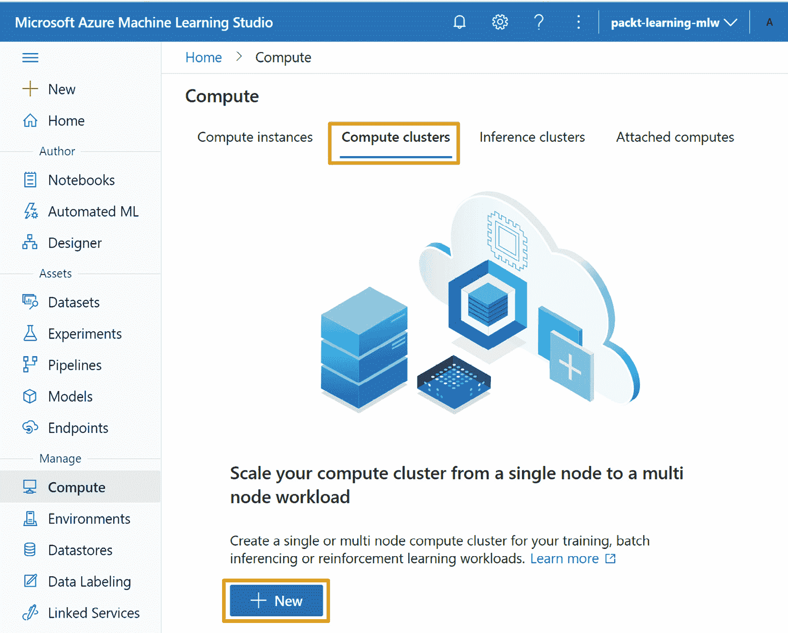
图 4.23–创建新的计算集群
- 您会注意到，与名为虚拟机优先级的计算实例相比，计算群集配置向导提供了一个额外的选项，如下面的屏幕截图所示。低优先级虚拟机利用 Azure 区域的剩余容量,您希望在该区域配置计算集群。与专用虚拟机相比，这些虚拟机的价格大幅降低，但不能保证计算节点在您需要时可用，甚至不能保证它们将一直由您拥有，直到计划的作业完成。这意味着您可能需要等待很长时间，直到您可以分配这样的虚拟机，并且您的培训过程中的一个步骤可能会在其执行过程中停止。考虑到低优先级虚拟机的这些特征，当您的作业对时间不敏感并且由小的运行步骤组成时，或者当这些步骤自动保持其状态并且在被驱逐时可以恢复执行时，您通常会使用这种类型的集群。出于本书的目的，您可以选择专用的选项来避免分配计算节点时意外的长时间等待。
- In the Virtual machine type option, select GPU and select the cheapest VM size available from the Select from recommended options list seen in Figure 4.24.
重要说明
默认情况下，免费试用订阅不允许您提供 GPU 计算。即使您更改为现收现付订阅，您也需要通过 Azure 门户网站请求增加您的配额。如果遇到配额不足的问题，可以选择基于 CPU 的计算，而不是基于 GPU 的计算。出于本书的目的，您不需要基于 GPU 的集群。
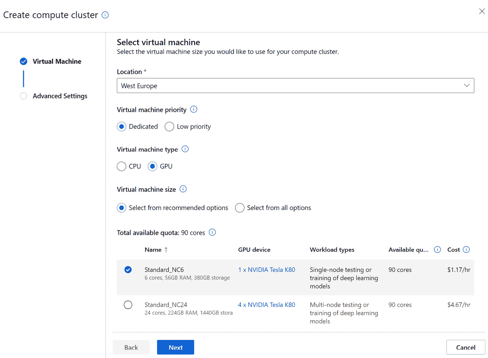图 4.24–计算集群配置向导的第一页
- 点击下一步进入向导的第二页:
- On the second page of the wizard, you will need to specify a cluster name. This name is going to be how you reference this cluster in the web experience and through code, so make sure it's something that represents what this cluster is meant for, such as
gpu-cluster: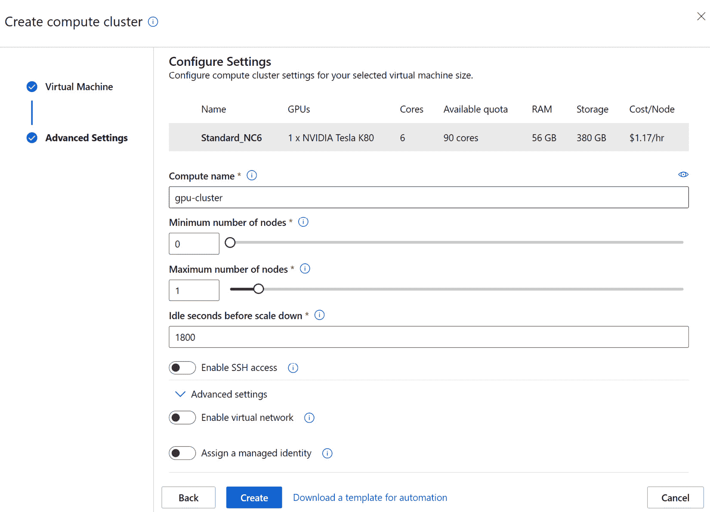图 4.25–计算集群配置向导的第二页
您还可以调整最小和最大节点数以及集群缩减前的空闲秒数。每次请求群集执行作业时，该作业的任务都会添加到群集的调度程序中。如果群集没有足够的节点来执行计划任务，它将通过向群集添加一个计算节点来进行横向扩展。向集群添加节点需要一些时间，因为您需要分配虚拟机。因此，一旦计划的任务完成，集群可以等待定义的空闲时间，而不是立即取消分配虚拟机，以防计划新的任务。
与计算实例类似，如果您想要远程连接到计算集群节点以对作业执行进行故障排除，您可以启用 SSH 访问。由于集群节点的短暂性，向导允许您根据需要指定一个管理员密码，而不是 SSH 公钥，如下面的屏幕截图所示:
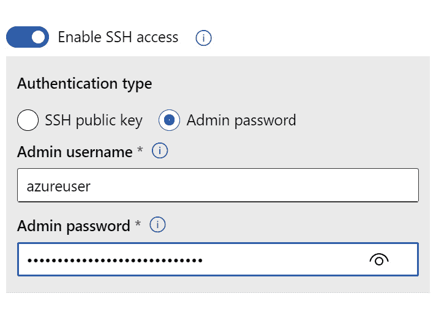图 4.26–计算集群允许您使用管理员密码而不是 SSH 公钥
在高级设置下，您可以找到启用虚拟网络选项，这是我们在上一节查看计算实例时看到的。除此之外，您还可以选择将托管身份分配给计算集群:
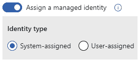图 4.27–向计算集群分配托管身份
Azure 允许你将一个Azure Active Directory(AAD)身份附加到计算集群节点，允许在那些虚拟机中执行的代码使用该身份访问 Azure 资源。托管身份消除了在脚本中存储凭证的需要。身份附加到特定的 VM，并且只要代码在特定的 VM 中执行，您的代码就可以通过 Azure 实例元数据服务或通过 Python SDK 请求 AAD 访问令牌，而无需密码。
- 出于本书的目的，您不能修改此处的任何选项。命名集群
gpu-cluster并点击创建来创建您的第一个零节点、基于 GPU 的计算集群:
图 4.28–您的第一个基于 GPU 的计算集群已经准备就绪
请注意，在前面的屏幕截图中，计算群集已成功调配，但其中有 0 个节点，这意味着它不会产生任何成本。您还可以在该列表中看到以下指标:
- 空闲节点:空闲时间过去后，等待任务调度或取消分配的节点。
- 忙碌节点:这些是当前正在执行任务的节点。
- Unprovisioned nodes: These are the nodes that haven't been allocated yet but can potentially be allocated if the number of scheduled tasks increases.
如果不再需要该集群，可以从该列表中将其删除。
如果您单击计算群集的名称，您将能够看到该群集的详细信息，如下面的屏幕截图所示。在此视图中，您可以编辑最小和最大节点数、集群缩减前的空闲秒数，以及更改之前配置的受管身份的分配方式。事实上，数据科学团队通常会在早上修改其预定义的计算集群，以便其中至少有一个节点。这有助于它们避免等待第一个节点被分配。当一天结束时，他们将设置调低至零以节省成本:
图 4.29–计算集群的详细信息，您可以在哪里编辑其配置
在本节中，您学习了如何配置计算集群。这些聚类用于执行训练作业和批量推理。在下一节中，您将学习如何提供一个 Azure Kubernetes 服务 ( AKS )，它允许您执行大规模的实时推理。
推理集群
Kubernetes 是一个可移植、可扩展的开源平台，用于管理容器化的工作负载和服务。由于它具有自动伸缩和从故障中自动恢复的能力，它已被广泛用于操作各种形式的应用程序，从 web 应用程序到模型推理 REST APIs。 Azure Kubernetes 服务 ( AKS )是 Azure 中 Kubernetes 集群的托管版本，这是一个服务，让你专注于你的工作负载，让 Azure 管理集群的操作位，比如它的主节点。
如果您不熟悉 AKS，请不要担心，下图提供了相关组件的高级概述。简单来说，你可以配置节点池，一组配置相同的虚拟机；比如上面有 GPU 卡的虚拟机。这些池可以有一个节点(或者更多)，这是一个虚拟机。在每个节点中，您可以托管一个或多个pod。每个 pod 由几个 Docker 图像组成，它们形成一个应用程序单元，其中一个可能是您想要操作的模型。每个 pod 可以复制到多个节点中，以适应增加的负载，或者在某个节点出现故障时提供弹性:
图 4.30–显示 Pod X 在两个节点中复制的 AKS 概念的高级概述
从 Azure ML Studio 中，您可以创建一个现有的 AKS 集群或将它附加到您的工作区。对于本书来说，你不需要创建一个 AKS 集群。让我们开始吧:
- The creation wizard can be invoked by clicking on the New button in the Inference clusters tab, seen in Figure 4.31: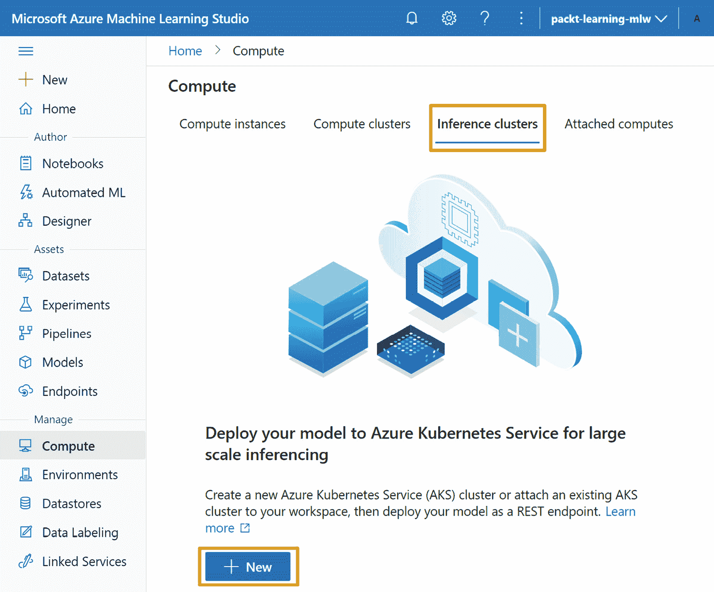
图 4.31–创建一个 AKS 集群或将它附加到 Azure ML 工作区
重要说明
当您提供 AKS 集群时，在您的 Azure 订阅中会创建一个新的资源组，它托管 AKS 工作所需的所有组件。这需要订阅级别的附加权限。如果您无法创建资源组，AKS 群集配置将会失败。
- In the first step of the wizard, you can either attach an existing AKS cluster or create a new one. If you choose to create one, you will have to specify the Azure region where you want the AKS cluster to be deployed. You will also need to specify the node pool's VM size, similar to what you did when you deployed a compute instance: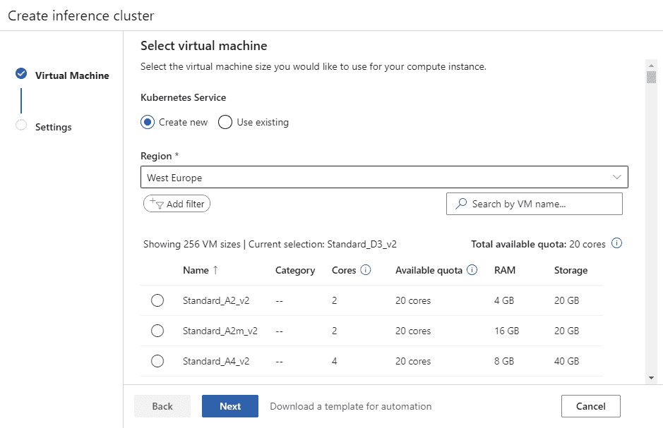
图 4.32–设置推理 AKS 集群的步骤 1
- 点击下一步会将你带到设置页面，在这里你需要指定 AKS 集群的名称。您还需要指定群集的用途。如果这是一个生产集群，集群中的虚拟 CPU 数量必须超过 12 个；这意味着，如果您选择了 4 核虚拟机大小，您将需要至少三个节点才能调配生产就绪型 AKS 集群。如果该集群用于开发和测试，您可以只配置一个节点。
- Besides the name and the number of nodes in the node pool, you can configure the networking options of the cluster and the SSL certificate that will be used to secure the connection to the applications, if you want to expose them through an HTTPS endpoint. For the purposes of this book, you do not need to modify any of those options: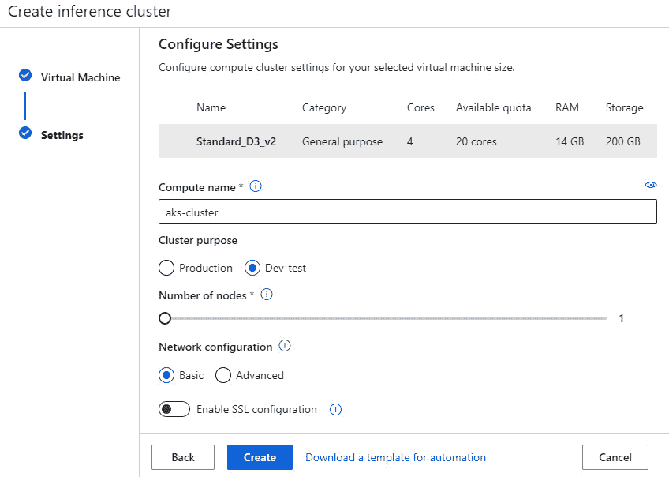
图 4.33–设置推理 AKS 集群的步骤 2
- 创建集群后，您将能够通过以下屏幕截图中显示的列表删除集群或将其从工作区中分离出来:
图 4.34-AKS 推理集群列表
重要说明
AKS 是部署实时端点的生产就绪方式。在考试中，当您被问到您将在哪里部署生产负载时，AKS 应该是正确的答案。尽管如此，因为 AKS 集群是一种昂贵的资源，所以本书不会在其示例中使用它。如果您使用免费订阅，您可能没有足够的核心配额来配置一个。如果您确实提供了一个，请确保关注成本，以避免信用耗尽。
在本节中，您了解了 Azure ML 如何帮助您附加或供应 AKS 集群，以便您可以托管您的生产实时推理端点。在下一节中，您将了解如何将现有计算资源附加到您的工作区。
附属计算机
如果您已经提供了计算资源，不一定在订阅中部署了 Azure ML 工作空间，您可以将它们附加到您的工作空间。附加这些资源允许您重用它们，尤其是在它们未被充分利用的情况下。一个常见的场景是，一个部门拥有一个基于 Ubuntu 的数据科学虚拟机 ( DSVM )，它可能每周 7 天、每天 24 小时运行，为遗留的 web 应用程序提供服务。您可以在实验中重用该资源，方法是将它附加到您的工作区，然后引用它来执行各种任务，就像您引用计算集群来执行任务一样。
studio 体验允许您附加多种类型的计算，包括以下流行的目标:
- 虚拟机:你可以连接现有的基于 Ubuntu 的虚拟机，这些虚拟机可以通过互联网公开访问。该选项包括您可能已经拥有的潜在 DSVMs。
- Azure Databricks 和 HDInsights :这些选项允许您将现有的基于 Apache Spark 的计算机连接到您的工作区。
- Azure 数据工厂:Azure 数据工厂资源允许你执行从一个数据源到另一个数据源的复制活动。例如，您可以使用该资源从存储帐户复制到 SQL 数据库。Azure Data Factory 目前仅通过 Azure ML SDK 支持，而不是来自 studio 体验。
对于 DP100 考试，您不需要附加任何资源。以下屏幕截图显示了如何从 studio 体验中启动连接向导:
图 4.35–将现有计算资源附加到您的工作空间
在本节中，您学习了如何向 Azure ML 工作空间供应和附加计算资源。这允许您在数据科学项目的数据探索、模型训练和模型推理阶段执行代码。在下一节中，您将学习如何配置到各种数据源的连接，这将使您能够访问数据。
连接到数据存储
数据存储是您的数据所在的引擎，并向任何获得授权的人提供访问权限。在您在互联网上看到的大多数 Python 示例中，都有一个连接字符串，其中包含连接到数据库或 blob 存储的凭据。这种技术有几个缺点:
- 存储在这些脚本中的凭证被认为是违反安全的，您可能会通过在公共存储库中(如 GitHub)发布脚本而意外地暴露受保护的数据集。
- 当凭证更改时，您需要手动更新所有脚本。
Azure ML 允许您有一个单一的集中位置，在这里您可以定义到各种存储的连接属性。您的凭证作为机密安全地存储在工作区的关联密钥库中。在您的脚本中，您使用数据存储的名称来引用它，并且您可以访问它的数据，而不必指定凭据。如果在某个时间点，数据存储的凭证发生变化，您可以集中更新它们，并且您的所有脚本和管道将继续工作。
您可以通过导航到 studio 的管理 | 数据存储部分来查看所有已注册的数据存储:
图 4.36–工作区中已注册的数据存储列表
请注意，默认情况下，您已经注册了两个数据存储。默认的一个名为workspaceblobstore，是默认的 blob 存储，其中存储了所有的管道度量和工件。您的工作区需要有一个默认的数据存储。正如你将在 第 7 章 、 The Azure ML Python SDK 中看到的，你甚至可以通过 Python SDK 非常容易地引用那个商店。另一个名为workspacefilestore的存储是一个文件共享数据存储，您可以在本地机器上挂载并上传文件。
从该列表中，您可以执行以下操作:
- 更新数据存储的凭证:您需要单击数据存储的名称，这将为您提供它的注册细节。从那里，您可以单击 Update credentials 来指定更新的值或更改身份验证的类型，您将在下一节中看到这一点。
- 取消注册数据存储:您可以取消注册任何未标记为默认数据存储的数据存储。
- 设置为默认数据存储:将默认数据存储更改为您从列表中选择的数据存储。
最后，从该列表中，您可以创建一个新数据存储库注册，这是一个激活新建数据存储库向导的操作，如下图所示:
图 4.37–新建数据存储向导
这里，您需要在 Azure ML 工作空间中指定一个惟一的数据存储名称。您必须这样做，以便在您的脚本和 studio 体验的各种组件中引用该商店。接下来您需要选择的是数据存储类型。Azure ML 工作空间支持一些 Azure 原生数据存储，这将在下一节中探讨。
数据存储的类型
Azure ML 支持两种类别的数据存储:基于文件的数据存储，如 blob 存储、文件共享和数据湖存储，以及关系数据库，如 Azure SQL 和 Azure PostgreSQL。
下图显示了当前支持的数据存储:
图 4.38–Azure ML 支持的数据存储
建议使用基于 Azure Blob 存储的数据存储。这些店是性价比最高的。它们提供多个层，例如更贵的高级层，这为您提供了更高的吞吐速度，如果您正在处理大量数据，这可以减少您的培训时间。
另一方面， Azure Data Lake Storage Gen 2 在 Azure Blob Storage 的基础上，通过添加层次化的名称空间来构建。该特性允许数据湖在文件夹级别分配访问权限。大型企业通常用存储数据的不同区域来构建数据湖。每个区域都有自己的访问控制列表 ( ACL )，将权限授予特定的人群。这意味着你可以看到一个文件夹的内容，而不是另一个文件夹的内容，而在 Azure Blob 存储中，一旦你访问了一个容器，你就可以看到其中的所有数据。
如果您的数据驻留在 Azure ML 不支持的数据存储中，您可以使用来自 Azure Data Factory 的复制工具轻松地将数据复制到 Azure Blob 存储或 Azure Data Lake 存储 Gen 2 。 Azure Data Factory 允许您从几乎任何地方复制数据，即使它驻留在本地数据库中，如下图所示:
图 4.39–使用 Azure 数据工厂和自托管集成运行时将内部数据复制到 Azure ML 支持的数据存储
重要说明
在附加计算部分，您看到您可以附加一个DataTransferStep。从本地网络复制数据可以在同一个 ADF 中完成，但是您必须在 ADF 中创作、执行和监控数据提取管道。
在本节中，您将看到 Azure ML 支持的类型的数据存储。在下一节中，您将了解这些数据存储支持的各种身份验证方法。
数据存储安全注意事项
根据数据存储，您将不得不指定不同类型的凭证来在 Azure ML 工作空间中注册它。对于 Azure Blob 和 Azure 文件共享数据存储，您可以使用以下凭据:
- 账户密钥:这提供了对整个 Azure 存储账户的访问。
- 共享访问签名 ( SAS ) 令牌:这是一种为存储账户的各种服务分配权限的更细粒度的方式。使用帐户密钥，您可以生成一个 SAS 令牌，该令牌只允许在有限的时间内访问特定的 blob 容器。
对于 Azure Data Lake 存储数据存储，由于它们的高级安全特性，您将需要提供一个tenant_id)，其中该实体已注册并具有唯一的 ID(称为client_id)。这个身份有一个密码(称为client_secret)，使您的代码能够访问模拟该身份的数据存储。
对于关系数据库数据存储，您需要指定数据库的名称、服务器的名称以及要连接的服务器端口。对于凭证，您可以提供一个服务主体，如果数据存储支持的话，或者提供必要的 SQL 认证凭证，它由一个数据库用户 ID 和一个密码组成。
有些数据存储允许您使用工作区的托管身份进行数据预览和分析。此选项将系统分配的托管身份作为特定资源的读者添加到工作区，允许工作区在 studio 体验中加载数据预览。该选项在数据存储注册页面上可用，如以下屏幕截图所示:
图 4.40–授予对工作区受管身份的访问权限
到目前为止，您已经学习了如何在 Azure ML 工作空间中注册各种数据存储。在下一节中，您将了解如何使用这些注册来定义数据集。
使用数据集
在前面的部分中，您在工作室的管理部分下配置计算和数据存储资源。配置好这个基础设施后，您可以开始将数据拉入您注册的数据存储库，并在 studio 的资产部分注册数据集:
图 4.41–Azure ML Studio 体验的资产部分中的数据集
数据集是你用于训练和推理的数据之上的一个抽象层。它包含对物理数据位置的引用，并提供一系列元数据来帮助您理解它们的形状和统计属性。当您想要访问数据集时，您可以通过它的名称来引用它，而不必担心凭据或确切的文件路径。此外，在同一工作空间工作的所有数据科学家都可以访问相同的数据集，从而允许他们并行地对相同的数据进行实验。
有两种类型的数据集——基于文件的数据集和表格数据集。文件数据集引用数据存储中的文件列表。例如，如果您正在构建一个计算机视觉模型，您将需要可以作为FileDataset下载或安装到您的计算机上的图像。表格数据集表示驻留在基于文件的数据存储区或关系数据库数据存储区中的表格数据。例如，您可以引用几个包含TabularDataset构造的文件夹，而不必解析物理文件。
数据集的另一个特性是，您可以使用版本对其属性和元数据进行快照。假设您有一个遵循weather/<year>/<month>/模式的文件夹结构。例如，您会发现 2021 年 1 月的天气测量值存储在weather/2021/01/measurements.parquet下。随着时间的流逝，你会得到越来越多的文件夹，每个文件夹下都有一个单独的文件。为了重现你的训练结果，你将想要参考仅包含截至 2021 年 1 月的文件的数据集。这正是数据集版本化派上用场的地方。在定型模型时，您注册了包含用于定型的所有文件的数据集版本。稍后，您可以参考数据集并请求它的特定版本，这将为您提供当时可用的所有文件的参考。
重要说明
数据集版本不也不复制底层数据。它们只存储对实际文件和数据集元数据的引用，您将在接下来的章节中读到这些内容。这意味着，如果您更改文件的内容而不是添加新文件，数据集版本将不会加载相同的数据。
注册数据集
您可以从各种来源注册数据集，如以下屏幕截图所示，包括从您在连接到数据存储库部分中了解到的数据存储库注册:
图 4.42–注册数据集的可能选项
为了更好地理解数据集注册过程是如何工作的，我们将注册两个托管在 web 上的表格数据集。这些数据集每个都由一个单独的拼花文件组成。我们将在本章后面使用这两个数据集来理解数据漂移检测功能。让我们开始吧:
- 从前面截图显示的菜单中选择从 web 文件，启动从 web 文件创建数据集向导。
- 在向导的第一页上，提供以下信息:
survey-drift-baseTabular
- Click Next: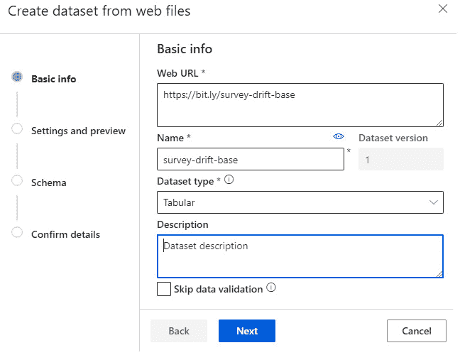
图 4.43–数据集注册向导的第一步
- The wizard will parse the file and figure out the file type and the schema of your dataset. You will need to validate the selection by clicking Next. Note that the wizard supports multiple file formats, as shown in the following screenshot: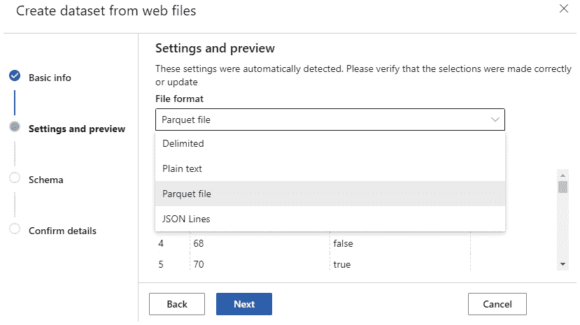
图 4.44–数据集注册向导的第二步
- 在下一步中，您可以定义关于模式的高级选项。对于基线数据集，保持默认选项不变。点击下一步，将引导您进入确认步骤。
- In this step, you can review your selections in the previous steps, and you can also schedule your first data science analysis task – profiling the dataset. This process generates the profile that you will explore in the next section. Enable the option and select
gpu-cluster, which you provisioned in the previous section, as shown in the following screenshot:重要说明
在Select Compute for profiling选项中，您可以从您在计算实例和计算集群部分调配的计算实例和计算集群中进行选择。选择计算群集将强制群集从零个节点扩展到一个节点，分析数据集，然后再次向下扩展到零个节点。如果需要，您可以导航到管理 | 计算部分，并通过单击计算群集的名称来观察这种横向扩展。如果您选择计算实例而不是计算群集，作业将被调度，并在计算实例启动时执行。
图 4.45-数据集注册过程的最后一步
您将需要再注册一个数据集。这里的过程几乎相同，只是这一次，您将把数据集标记为时序数据集:
- Click on Create dataset and select From web files, as shown in the following screenshot: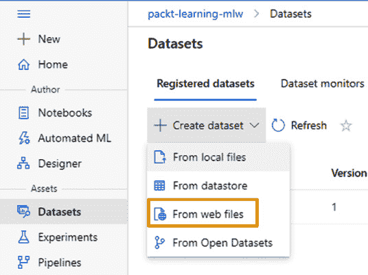
图 4.46–数据集列表中的创建数据集菜单
- 按照与之前相同的步骤，输入以下信息:
survey-drift-target
- During the schema step, make sure that you select Timestamp from the Properties section of the inference_date column, as shown in the following screenshot. This option flags this tabular dataset as a time series dataset, something that allows you to perform additional analysis, as you will see in the Data drift detection section: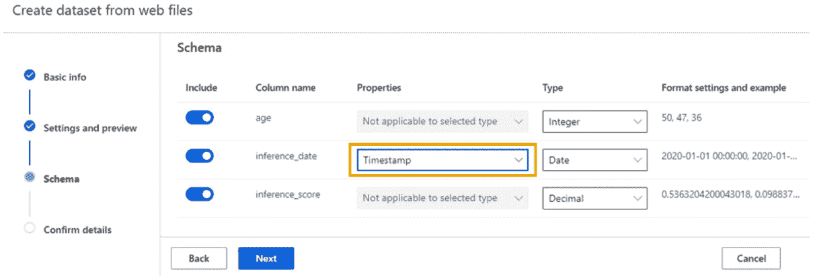
图 4.47–配置表格数据集，使其成为时间序列数据集
- Schedule data profile analysis and complete the dataset registration process.
重要说明
如果您一直这样做，您可能会注意到，对于
year=2021/month=05/day=01/data.parquet，您可以通过路径模式创建一个虚拟列，并将其定义为您的分区时间戳。这提高了时间序列功能的重要性，并允许您通过有选择地只读取所需的文件来加载特定的日期。
您应该能够看到两个注册的数据集，如下面的屏幕截图所示:
图 4.48–Azure ML 工作区中已注册数据集的列表
在这个视图中，您可以选择一个数据集，然后单击取消注册按钮来删除注册。单击数据集后，您可以查看关于它的更多详细信息，包括您在数据集上执行的剖面分析，您将在下一节中看到这些内容。
探索数据集
在数据集列表中，点击测量-漂移-目标数据集上的，打开其详细信息。在第一个选项卡 Details 中，您可以修改数据集的描述并指定与数据集相关联的标签。标签是名称-值对。在下面的截图中，您可以看到我们将调查指定为实验标签的值:
图 4.49–显示与特定数据集相关联的所有元数据的数据集详细信息
在消费选项卡中，您可以复制您将在 第七章 、Azure ML Python SDK中使用的 Python SDK 代码，以访问数据集:
图 4.50-使用提供数据集访问的代码片段
在 Explore 选项卡中，您将能够预览数据集中包含的数据样本，就像您在注册过程中看到的一样:
图 4.51–预览数据集样本
如果您点击 Profile 选项卡，您将能够看到数据集的统计分析，如下图所示:

图 4.52-数据集的统计分析
重要说明
如果您的数据集包含的行少于 10，000 行，将自动为您进行分析，而无需您为数据集安排处理方面的时间。如果数据集包含超过 10，000 行，那么 Azure ML 会对前 10，000 行执行分析，并显示一条警告消息，提示您安排一次完整的概要分析，您可以通过单击菜单中的 Generate profile 按钮来完成。
最后，在 Models 选项卡上，您可以看到与该数据集相关的模型，这是您将在 第 5 章中做的事情，让机器进行模型训练，这时您将注册您将作为 web 服务部署的最佳模型。
注册数据集后，您可以为数据集配置数据漂移的定期监控，这将在下一节中介绍。
数据漂移检测
数据漂移检测是一种技术，允许您将时间序列数据集与参考数据集进行比较，然后检查您正在比较的特征的统计属性是否发生了显著变化。例如，让我们假设您训练了一个 ML 模型，该模型根据某人的年龄来预测他是否会参与调查。您使用了survey-drift-base数据集来训练该模型。下图显示了密度曲线，该曲线显示了年龄在训练数据集中的分布:
图 4.53-训练数据集中年龄特征的负偏态单峰分布
当你操作模型时，你跟踪它每周做出的推论，并且你将这些信息记录在你之前注册的survey-drift-target数据集中。这个数据集包含了你在 2020 年前两周所做的推论。数据漂移检测使您能够检测输入要素的分布是否随时间而变化。让我们来看看:
- Navigate to Assets | Datasets | Dataset monitors and click on the Create button to start the dataset monitor wizard:
图 4.54–创建新的数据集监视器
- On the target dataset, you will see all the registered time series datasets you want to monitor for data drift. This is the inference that your model has been doing in production. Select
survey-drift-target (Version:1)and click Next:图 4.55–数据漂移监控器配置的第一步
- On the next page, you need to select your reference point. This can either be a specific point in time from within the time series tabular dataset or a specific dataset. In your case, select the
survey-drift-base (Version:1)dataset, which is the dataset that was used to train the ML model:图 4.56–在数据漂移监视器配置期间选择基线数据集
- 在向导的最后一步，您需要定义以下信息:
survey-drift-monitor。- 特征:选择两个数据集之间的一个或多个共同特征，监测它们的分布情况以及是否存在数据漂移。在这种情况下，两个数据集之间唯一的共同特征是年龄特征。
- 计算目标:将上下旋转以执行分析的集群。
- 频率:频率指定目标数据被检测漂移的时间间隔。一旦创建了监视器，就不能更改该属性。您可以选择日、周或月。请记住，每个时间间隔需要不到 50 个样本来执行数据漂移分析。这意味着，如果每天的行数少于 50 行，就不能以此作为频率，而应该选择周，甚至月。
- 延迟:在对一行进行实际评分和刷新目标数据集之间通常会有延迟。在该字段中，您指定在假设目标数据集获得最新记录之前要等待多长时间；然后，监视器可以执行数据漂移分析。
- 电子邮件地址:如果数据集的漂移超过了为阈值参数指定的范围，这是发送电子邮件的地方。
- 出于本书的目的，您可以禁用该计划，如下图所示。您将手动运行数据漂移分析。
- Click on the Create button to create the monitor:
图 4.57–数据漂移监控设置
- 点击您从监视器列表中创建的新监视器的名称:
图 4.58–数据漂移监视器列表
数据漂移监视器旨在针对新数据按计划运行。在您的情况下，您希望分析目标数据集中的现有数据。让我们来看看:
- Click on the Analyze existing data button, which will bring up the backfill wizard shown in the following screenshot:
图 4.59–手动开始过去日期的分析
- 选择 2019 年 12 月 31 日至 2020 年 1 月 15 日。这是包含目标数据集中所有记录的时间范围。
- 选择将进行分析的计算群集。
- 点击提交。
一旦分析完成，这是一个需要一些时间的过程，您将能够看到数据漂移结果，这表明在我们的数据集中观察到了大数据漂移。注意，总结指的是最新的推论，是 2020 年 1 月 5 日做的。您可以通过单击相应日期的图表来手动选择以前的时段:
图 4.60-在基础数据集和目标数据集之间检测到的数据漂移
如果您向下滚动到特征分布，您将能够清楚地看到年龄特征上的分布漂移。这表明该模型正在对一个群体进行推断，该群体的特征与其接受训练的群体的特征不同。这是一个很好的迹象，表明您可能需要重新训练模型，使其与新的功能分布保持一致:
图 4.61-基线是负偏态分布，而最新的推论遵循正偏态分布
在本节中，您学习了如何配置数据漂移检测，这是通过将您的模型在生产中观察到的数据与用于训练模型的数据集进行比较来完成的。这是一个强大的功能，允许您确定是否需要使用较新的数据重新训练模型，尤其是当功能分布随着时间的推移而改变/漂移时。
总结
在本章中，您学习了如何向 Azure ML 工作空间供应和附加计算资源。您还了解了如何注册各种数据存储，以便以安全的方式访问数据。最后，您探索了 Azure ML Studio 的数据集注册功能，它允许您轻松地访问实验数据。注册数据集后，您可以配置数据漂移监视器，如果要素的分布随时间发生变化，它会向您发出警告，这可能表明需要重新训练在该数据集上训练的 ML 模型。现在你应该对配置你的 Azure ML 工作空间感到舒服了，这是 DP-100 认证中衡量的关键技能之一。
在下一章中，您将了解如何利用您在工作空间中注册的数据集来执行 Auto ML 分析，该过程将在您配置的计算集群上运行多个 ML 实验，以检测您的数据集的最佳算法。
问题
在每一章中，你会发现几个问题，这样你就可以测试你对本章内容的了解程度:
- How many data scientists can work on a single compute instance that has 8 cores and 56 GB of RAM?
a.只有一个。
b.最多两个。
c.最多五个。
d.他们想要多少就有多少，只要不耗尽计算资源。
- What type of credentials do you need to provide to access a data lake store that's either Gen 1 or Gen 2?
a.一个个人接入令牌 ( 拍)
b.服务主体的客户端 ID 和机密
c.您自己的 AAD 用户凭证
d.不需要凭证
- Which of the following Azure tools can help you orchestrate data moving from an on-premises environment?
a.Blob 存储
b.Azure 活动目录
c.Azure 数据工厂
d.Azure ML 工作区
延伸阅读
本节提供了一个有用的网络资源列表，可以帮助你增加对本章所讨论主题的知识和理解:
- 您可以通过以下链接了解有关如何在计算集群中使用托管身份的更多信息:https://docs . Microsoft . com/azure/machine-learning/how-to-create-attach-compute-cluster？tabs = python # managed-identity-use。
- 实例元数据服务允许您使用附加的托管身份请求 Azure 资源的令牌。你可以在https://docs . Microsoft . com/azure/virtual-machines/Linux/instance-metadata-service了解更多信息。
- 你可以在https://docs . Microsoft . com/Azure/Storage/blobs/Data-Lake-Storage-access-control-model了解更多关于 Azure Data Lake Storage Gen2 的访问控制模型。
- 您可以在https://docs . Microsoft . com/Azure/Data-Factory/quick start-create-Data-Factory-copy-Data-tool了解如何使用 Azure Data Factory 的复制数据工具轻松复制数据和配置常规数据接收。
- 您可以在https://docs . Microsoft . com/Azure/Storage/common/Storage-SAS-overview了解如何使用 SAS 令牌授予对 Azure 存储帐户的有限访问权限。
- 您可以在https://docs . Microsoft . com/Azure/active-directory/develop/app-objects-and-service-principals了解有关服务主体的更多信息，这些服务主体可用于访问 Azure 数据湖数据存储。